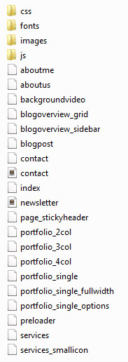
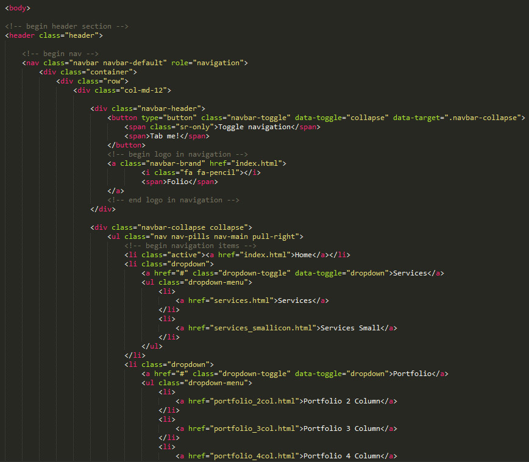
All files and folder are organized, structured and commented with care.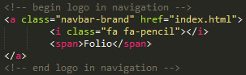
Place your logo between the <a></a> tag.
If you have an image copy this line:
<img src="your/image.png" alt="logo">
and paste it between the <a></a> and change the image path.
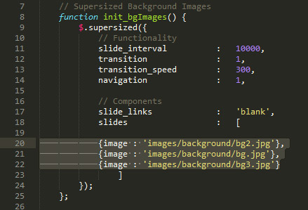
Go into the folder JS and open main.js.
On line 20, 21 and 22 are the images. Just change the path to your own image and your done.
Save the file and your done.
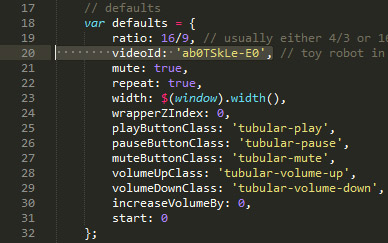
Go into the JS folder and open jquery.tubular.1.0.js
On line 20 you see:
videoId: 'ab0TSkLe-E0',
Change the id between the ' ' to another YouTube video id (which can be found if you click Share under the video on YouTube and copy the id.
Save the file and your done.
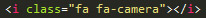
Font Awesome icons are used in this theme. For more information http://fortawesome.github.io/Font-Awesome/
To see al the available icons of Font Awesome: http://fortawesome.github.io/Font-Awesome/icons/
To change a icon just edit the class names
Example:
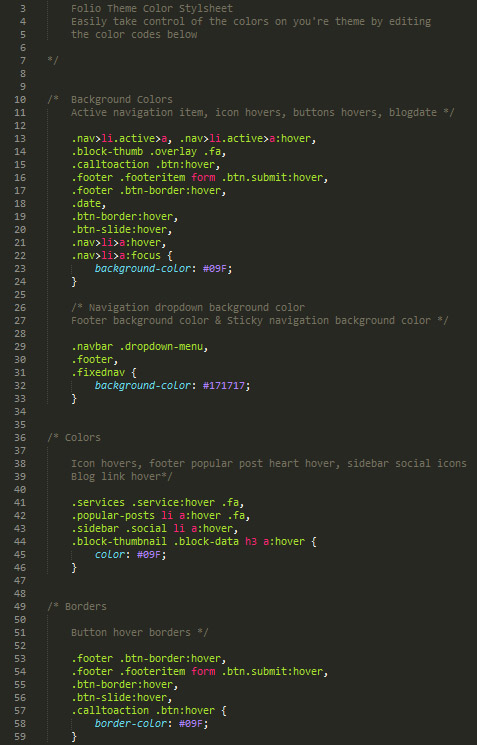
Go into the folder css and open theme_color.css
You'll see 4 color codes. If you want another color sheme just change the color codes.
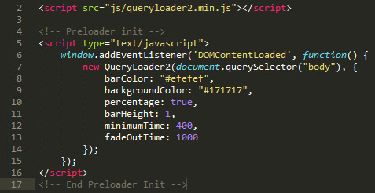
If you want a preloader on all pages add:
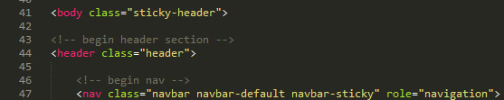
if you want a sticky header add a class="sticky-header" to the body tag, and add navbar-sticky after navbar-default class.
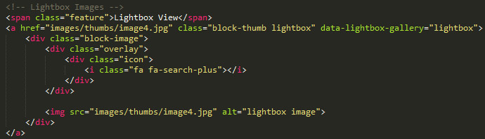
add class: lightbox after block-thumb and after the whole class add data-lightbox-gallery="lightbox"
Dont forget to change the a href="" to the image path.
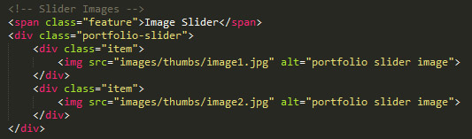
If you want a image carousel / slider just wrap your images in a <div class="item"></div> and wrap all the divs in a <div class="portfolio-slider"></div>
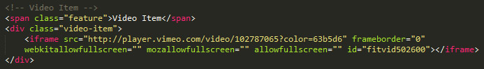
If you want to post a video in your portfolio section or in the blog section just paste the iframe embedd code between the div.video-item.
The service pages comes with 2 layout.
1 with big icons, the other one with small icons.
for the big icons the class is: service textcenter
and for the smaller icons the class is: service small
Again, thank you very much for purchasing this template.
jQuery - www.jquery.com
Font Awesome - Font Awesome Font
Text font: Open sans - http://www.google.com/fonts/specimen/Open+Sans
Background image – www.raumrot.com
Bootstrap 3 – www.getbootstrap.com
Owl Carousel – www.owlgraphic.com/owlcarousel/
fitVid.js – www.fitvidsjs.com
Nivo Lightbox – http://dev7studios.com/plugins/nivo-lightbox/
One Page Nav Plugin – http://github.com/davist11/jQuery-One-Page-Nav
Query Loader 2 - http://www.gayadesign.com/diy/queryloader-preload-your-website-in-style/
Tubular.js - http://www.seanmccambridge.com/tubular/
Supersized Background - http://buildinternet.com/project/supersized/
AJAX contact form - http://jigowatt.co.uk/products/